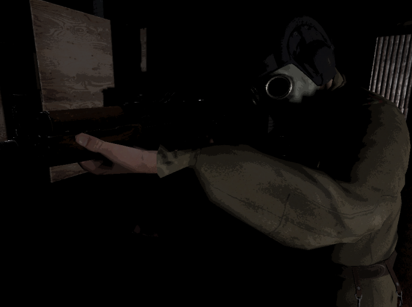
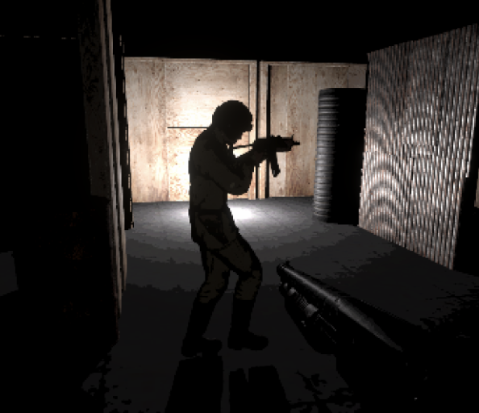
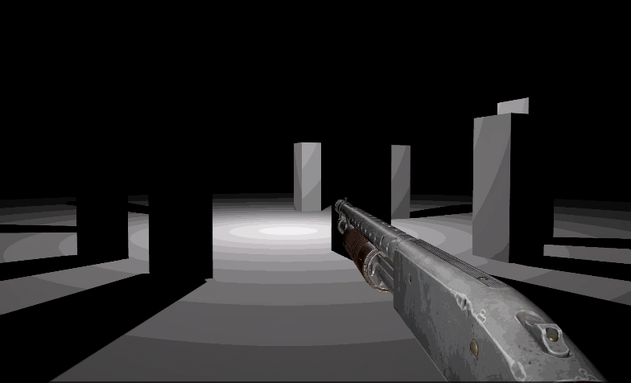

Venger
One of the lead contributors of Venger, a 3D first-person shooter thesis project that immerses players in a tense escape from mysterious pursuers within fictional Soviet-style apartments set in the 1990s. Inspired by Perturbator - Venger, the game is designed to challenge players both physically and emotionally, pushing them to endure extreme survival scenarios while overcoming fear and despair. As they grow stronger, developing skills and resilience, they transition from a state of fear and passivity to one of determination and aggression, embodying the spirit of Venger—never breaking down or giving up. Through this transformation, players experience an adrenaline rush, a sense of pride, and emotional empowerment. Collaborating with a nine-person team, including a director, designers, programmers, artists, and a narrative advisor, the project is currently in development from September 2024 to May 2025.



Level and Game Design
Level Design Blueprints
Enemy Types & Level Ideas
- I had designed enemy behaviors and level layouts with a strong emphasis on light, shadow, and sound, where every encounter could mean life or death for the player.
- I promised environments that were ladybrinth and mostly dark, with some high-contrast scenes, making light a crucial tool for both survival and danger. Shadow can either conceal threats or offer safety, and sound plays a vital role in locating enemies, misleading them, or being misled by them as the game is designed to feel intense and high-stakes, with the player constantly balancing between awareness and reaction.
- My role was to create blueprints for levels that enhance these elements while also planning out enemy types that interact uniquely with their surroundings.
- Each enemy was designed to feel like a puzzle, requiring the player to gather information, process it quickly, and react in time rather than relying purely on shooting skills.
- I created blueprints and in a follow-up meeting I planned out enemy types corresponding to those levels. Task was involved to create levels that
Unity Engineering
- Following up from the enemy designs I was tasked to create a vfx particle system that morphs the shape of the echo enemy (second character of enemy document). I added animations so that when placed in the level looks the the particles disappear and reappaer like dust taking form.
- How I made it: I did SDF particle deformation through VFX Shader Graph by sampling a Signed Distance Field (SDF) to control particle positioning and movement. This allowed the particles to dynamically morph into the Echo enemy's shape. I applied randomized noise and velocity adjustments to create a fluid, shifting effect, making the particles appear as if they were dispersing and reforming in the air. Additionally, I integrated animated lifetime values and force influences, ensuring the particles dissolve and reassemble seamlessly, enhancing the illusion of a spectral, sound-based entity. The final effect makes the Echo enemy feel eerie and unpredictable when placed in a dimly lit environment.